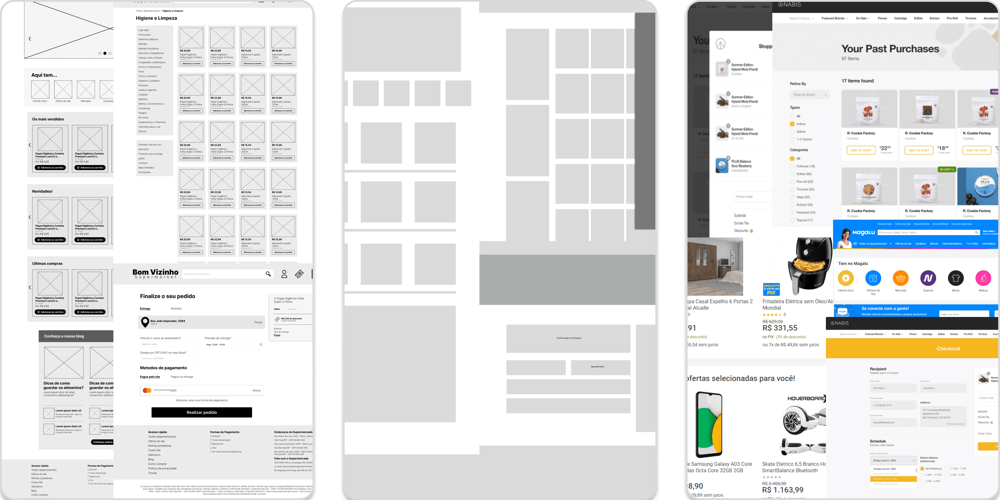
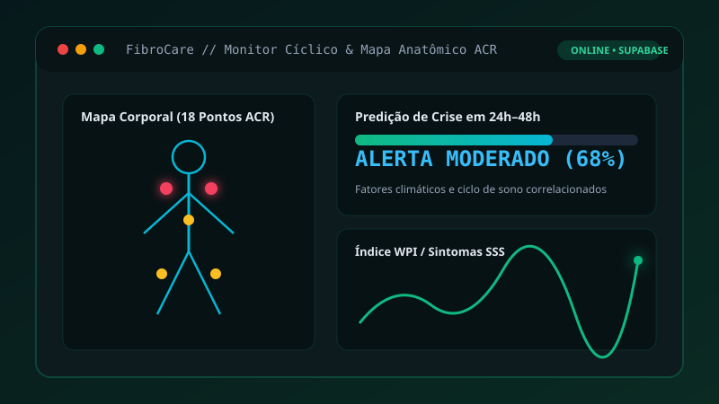

Projetos Selecionados

Simulação de Planos de Saúde
Resumo rápido sobre o case de sucesso: Redesenho completo do fluxo de cotação da Associação Cartão Cristão, eliminando atritos funcionais e alavancando as taxas de conversão de leads no site.

Supermercado Bom Vizinho
Resumo rápido sobre o case de sucesso: Estratégia de imersão e prototipação no Figma para criar a presença online própria de uma rede de 20 anos, garantindo autonomia de marca e compras online.

FibroCare (FibroTracker)
Resumo rápido sobre o case de sucesso: Plataforma para monitoramento de dor crônica com mapa anatômico interativo dos 18 pontos do ACR e predição de crises em 24h–48h para reduzir ansiedade.
Apresentando-me
Sou UX Designer, formado em Design Gráfico com pós em UX e em fase de conclusão da pós em Neurociência do Desenvolvimento.
Atuo na criação de estratégias de produto, análise de dados e acompanhamento de métricas para otimizar continuamente a experiência do usuário. Desenvolvo briefings, arquitetura de informação, wireframes e protótipos de alta fidelidade no Figma, buscando soluções inovadoras e consistentes.
Atualmente atuo como UX Designer na EasyChange. Minha trajetória profissional inclui passagens como Designer Instrucional na Neogrid, Web Designer na Associação Cartão Cristão do Brasil e Estagiário em UX/UI na Nesta.
Projetos
Estudos de caso de UX, produtos digitais, design systems e jogos interativos.